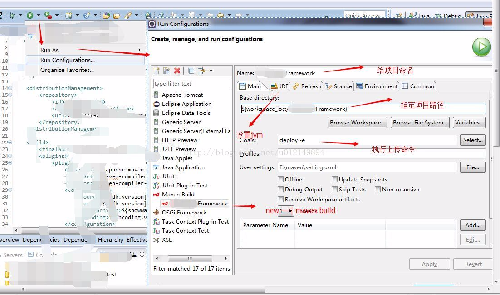

操作如下：
1、将maven 中的settings文件配置好用户名和密码，如下：s
<servers>
<server>
<id>releases</id>
<username>admin</username>
<password>admin</password>
</server>
</servers>
2、将需要打成jar的项目中的pom文件中配置上传的maven仓库路径：
<distributionManagement>
<repository>
<id>releases</id>
<name>Deploy Server</name>
<url>http://192.168.1.1:9000/nexus/content/repositories/thirdparty/</url>
</repository>
</distributionManagement>
3、在eclipse 中 run configuration中设置，如下图：

4、点击运行即可
提示，如果出现报错说未经授权，说明settings中的用户信息配置错误